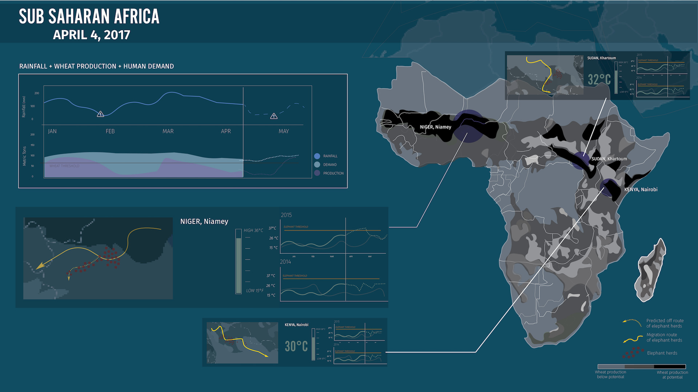

Biodiversity Dashboard
Create a single screen dashboard


PROJECT BACKGROUND
The goal of this project was to design a single screen dashboard to show the critical effect of climate change and biodiversity on Sub-Saharan Africa. Therefore, as designers we must create a board to satisfy both our clients’ and user’s individual goals. The users will not be able to interact with the dashboard so the only way to reach the users by using animations to attract the user's attention.


CLIENTS: SCIENTISTS
Our client for this project was an advisory board of scientists who wanted to stress the important results of their research on climate change and biodiversity and the monitoring efforts that should be acted upon. Their primary goal was to urge the policy makers to take appropriate action to mitigate the effect that climate change have on biodiversity before it’s too late.

USERS: POLICY MAKERS
Our users were national-level policy makers who were swamped with a lot of information and distraction. They did not have a lot of time to dedicate time to focus on the dashboard.
RESEARCH
We started out by doing online research to understand the effect of climate change on biodiversity. From there, we had to narrow down on what we wanted to show and point out to the policy maker with one single dashboard screen that the user will not be interacting with. The only way we can call out attention to the user is through animations.
From our initial research, we realized Sub-Saharan Africa has a wide range of habits and ecosystems. There are a lot of species population that are dependent on the amount of rainfall, temperature, and the degree of topographical and habitat variation. Africa feels a greater effect of climate change relative to first-world economies. Climate changes pose a great threat to biodiversity and the growth in agriculture, which is also linked to the growth of the population. Sub-Saharan Africa's population is projected to reach more than 2 billions or 22% of the world total by 2050. By 2080, Sub-Saharan Africa will be the only region in the world with a population that is still growing. This will affect the food production because the traditional or modern methods for production can’t keep up with changing environment. Currently, they are slashing and burning forested or heavily wooded area for short-term survival needs. But the exploited local ecosystem and natural rate of replenishment, which decreases diversity. Therefore, as the population continues to grow, the biodiversity of the area decreases.

KEY INDICATORS
- 1. Agricultural fields and how well they produce relative to the land’s potential.
- 2. Wheat (a staple crop in the region) production in relation to demand
- 3. Keystone Species - Elephant. Their migration patterns and the deviations from these norms due to climate change
- 4. Temperature in key agricultural regions
- 5. Rainfall in relation to wheat production

INITIAL DESIGNS
From the research we gathered, we sketched different ways to visualize all this data. We narrowed down to 6 indicators to focus on. These include the temperature change to track the climate change, agriculture growth measured through wheat (one of the largest crop), rainfall, population growth, the elephant population, and poaching.


From our initial feedback, we had a lot of useful information but we lacked a central message.

NEXT ITERATION

FINAL DESIGN
The dashboard’s point of entry is a quick glance into past, present, and the predicted future of wheat production in relation to the region’s demand. The co-location of the rainfall trend over the same time period immediately correlates for the policymaker that one of the three potential reasons for any wheat underproduction. Shifting his/her gaze to the map callouts, the policymaker is provided with real-time trend information about the region’s most important agricultural areas. Not only do these callouts present temperature changes that could affect the area’s crop productivity, they also highlight when these temperature changes cause deviations in elephant migration, which could also endanger the agricultural areas. Focusing on the map itself lends the third possible reason for wheat underproduction. The map presents converted agricultural land throughout the region encoded by how well each area is producing relative to its potential, i.e. what it could produce.
ACTION FOR POLICYMAKERS
- Use predictive climate information provided by the dashboard to take advanced precautions as to when these changes may have major effects on crop production
- Act on the provided knowledge of elephant migration deviations by notifying the farmers of the affected fields and encouraging these farmers to take advantage of simple, organic elephant repellents instead of attacking the elephant.
- Utilize the knowledge of where farmers are not using their land to produce to its potential to focus his promotion of more sustainable agricultural practices to target those areas.